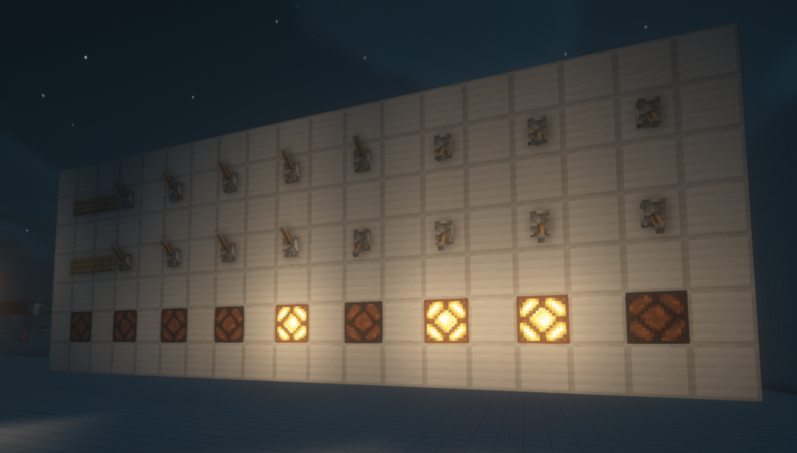

Binary adding machine in Minecraft and JavaScript
Minecraft and JavaScript implementation of the 8-bit binary adding machine described in chapter twelve of "Code: The
Hidden
Language of Computer Hardware and Software" by Charles Petzold.
2022-08-21